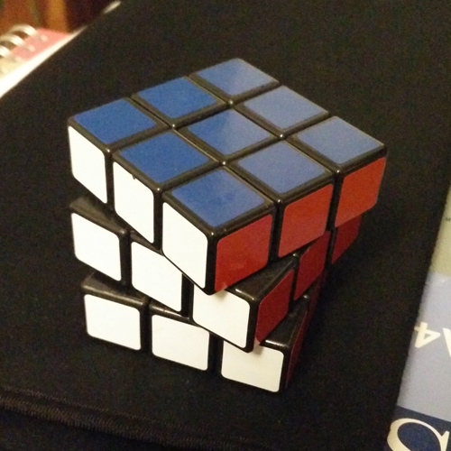

3×3×3 Cube

- The original and official puzzle is intended for those looking to learn solving methods.
- They are most commonly produced at the standard size of 57mm, with each cubie measuring short of 19mm.
- This particular model is rarely used in competitions in favour of better-built, speed-optimised cubes.
- The stickers on cheaper models are prone to peeling and fading, and the pictured cube has been re-stickered with DaYan stickers for this reason.
Aliquam neque nisl, elementum ut sapien a, sodales laoreet tortor. Aliquam augue nulla, ultricies et iaculis quis, dictum ac augue. Cras vel vehicula lorem. Proin iaculis sed tellus at eleifend. Fusce ultricies quis nulla nec laoreet. Interdum et malesuada fames ac ante ipsum primis in faucibus.